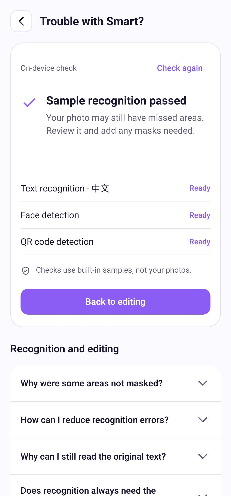

Paramètres
Aide à la détection et paramètres
Vérifiez la détection du texte, des visages et des codes, ou modifiez vos préférences.
Suivre les étapes
Choisissez un repère temporel pour accéder à une étape. Passez en plein écran pour voir les détails.
Mode d’emploi
Ouvrez l’aide à la détection dans le menu du point d’interrogation. Le test utilise des exemples intégrés, pas vos photos. Téléchargez les ressources si elles manquent. Les modèles disponibles fonctionnent hors ligne ; un test réussi ne garantit pas la détection de chaque photo.
La reconnaissance du texte suit la langue de l’app. Le thaï et l’ourdou ne sont pas pris en charge ; visages et codes fonctionnent indépendamment. Changez de langue dans les paramètres. Les effets et réglages sont conservés pour les prochaines photos.
Pour signaler un problème, utilisez l’option des paramètres. Vérifiez le rapport dans votre messagerie ou le panneau de partage avant de l’envoyer ; SnapMosaic ne l’envoie pas automatiquement.
Dans les paramètres, touchez la ligne de version pour rechercher une mise à jour ou ouvrir Google Play si elle est disponible. Un point rouge peut aussi signaler une nouvelle fonction ; ouvrez les paramètres pour voir laquelle.

